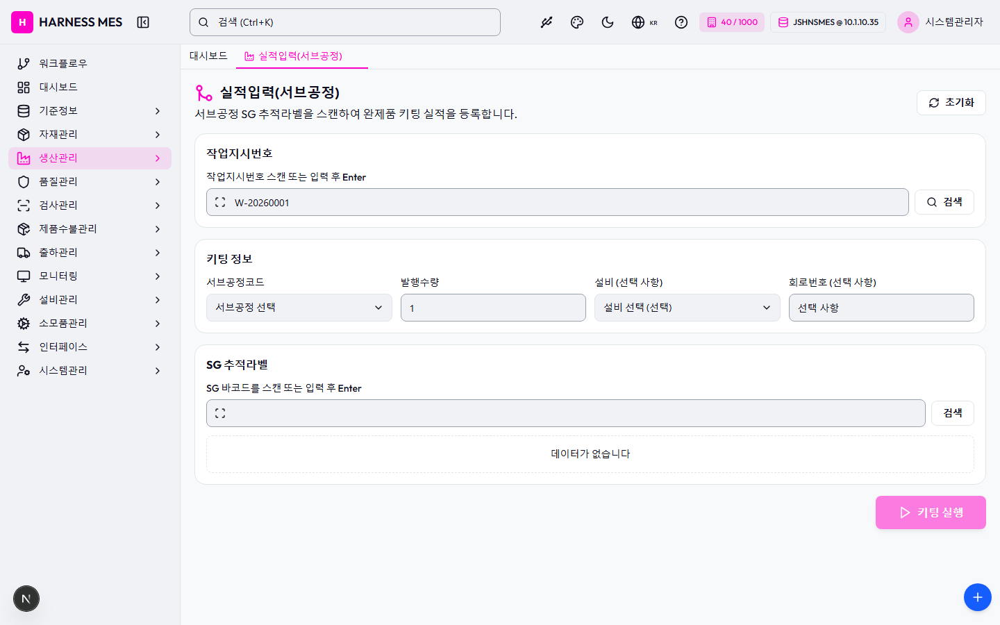

Route: /production/subprocess-kitting
Status: PASS / HTTP 200
| 기능/버튼 | 처리 방식 | 상태 | 비고 |
|---|---|---|---|
| 화면 로드 | GET /production/subprocess-kitting | 실행 | HTTP 200 |
| 라우트 prewarm | 직접 HTTP 확인 | 실행 | HTTP 200, 184ms |
| 초기 API 호출 | 브라우저 네트워크 수집 | 실행 | 14건 |
| 🇰🇷 | 화면 버튼 목록화 | 목록화 | 후속 메뉴별 세부 시나리오 실행 대상 |
| 시스템관리자 | 화면 버튼 목록화 | 목록화 | 후속 메뉴별 세부 시나리오 실행 대상 |
| 워크플로우 | 화면 버튼 목록화 | 목록화 | 후속 메뉴별 세부 시나리오 실행 대상 |
| 대시보드 | 화면 버튼 목록화 | 목록화 | 후속 메뉴별 세부 시나리오 실행 대상 |
| 기준정보 | 화면 버튼 목록화 | 목록화 | 후속 메뉴별 세부 시나리오 실행 대상 |
| 자재관리 | 화면 버튼 목록화 | 목록화 | 후속 메뉴별 세부 시나리오 실행 대상 |
| 생산관리 | 화면 버튼 목록화 | 목록화 | 후속 메뉴별 세부 시나리오 실행 대상 |
| 품질관리 | 화면 버튼 목록화 | 목록화 | 후속 메뉴별 세부 시나리오 실행 대상 |
| 검사관리 | 화면 버튼 목록화 | 목록화 | 후속 메뉴별 세부 시나리오 실행 대상 |
| 제품수불관리 | 화면 버튼 목록화 | 목록화 | 후속 메뉴별 세부 시나리오 실행 대상 |
| 출하관리 | 화면 버튼 목록화 | 목록화 | 후속 메뉴별 세부 시나리오 실행 대상 |
| 모니터링 | 화면 버튼 목록화 | 목록화 | 후속 메뉴별 세부 시나리오 실행 대상 |
| 설비관리 | 화면 버튼 목록화 | 목록화 | 후속 메뉴별 세부 시나리오 실행 대상 |
| 소모품관리 | 화면 버튼 목록화 | 목록화 | 후속 메뉴별 세부 시나리오 실행 대상 |
| 인터페이스 | 화면 버튼 목록화 | 목록화 | 후속 메뉴별 세부 시나리오 실행 대상 |
| 시스템관리 | 화면 버튼 목록화 | 목록화 | 후속 메뉴별 세부 시나리오 실행 대상 |
| 실적입력(서브공정) | 화면 버튼 목록화 | 목록화 | 후속 메뉴별 세부 시나리오 실행 대상 |
| 초기화 | 화면 버튼 목록화 | 목록화 | 후속 메뉴별 세부 시나리오 실행 대상 |
| 검색 | 화면 버튼 목록화 | 목록화 | 후속 메뉴별 세부 시나리오 실행 대상 |
| 키팅 실행 | 화면 버튼 목록화 | 목록화 | 후속 메뉴별 세부 시나리오 실행 대상 |
| 전체화면 보기 | 화면 버튼 목록화 | 목록화 | 후속 메뉴별 세부 시나리오 실행 대상 |
| AI 채팅 | 화면 버튼 목록화 | 목록화 | 후속 메뉴별 세부 시나리오 실행 대상 |
| 개선요청 등록 | 화면 버튼 목록화 | 목록화 | 후속 메뉴별 세부 시나리오 실행 대상 |
| 입력 필드 | DOM 수집 | 목록화 | 5개 |
| 선택 필드 | DOM 수집 | 목록화 | 2개 |
| Method | URL | Status | OK |
|---|---|---|---|
| GET | /api/health | 200 | OK |
| GET | /api/db-info | 200 | OK |
| GET | /api/health | 200 | OK |
| GET | /api/db-info | 200 | OK |
| GET | /api/master/companies/public | 200 | OK |
| GET | /api/master/companies/public/plants?company=40 | 200 | OK |
| GET | /api/db-info | 200 | OK |
| GET | /api/auth/me | 200 | OK |
| GET | /api/system/configs/active | 200 | OK |
| GET | /api/system/comm-configs?commType=SERIAL&useYn=Y | 200 | OK |
| GET | /api/menu-categories/tree | 200 | OK |
| GET | /api/equipment/equips/metadata/processes | 200 | OK |
| GET | /api/equipment/equips?limit=200 | 200 | OK |
| GET | /api/master/com-codes/all-active | 200 | OK |
수집된 오류 없음

H HARNESS MES 🇰🇷 40 / 1000 JSHNSMES @ 10.1.10.35 시스템관리자 워크플로우 대시보드 기준정보 자재관리 생산관리 품질관리 검사관리 제품수불관리 출하관리 모니터링 설비관리 소모품관리 인터페이스 시스템관리 대시보드 실적입력(서브공정) 실적입력(서브공정) 서브공정 SG 추적라벨을 스캔하여 완제품 키팅 실적을 등록합니다. 초기화 작업지시번호 작업지시번호 스캔 또는 입력 후 Enter 검색 키팅 정보 서브공정코드 서브공정 선택 ATCUT - 자동절단 ATCNS - 자동절단탈피 STRPB - 양단탈피 CRMPF - 전단압착 CRMPR - 후단압착 CRMPB - 양단압착 SHDCT - 실드절단 SACRP - 반자동압착 MIDST - 중간탈피 SJCRP - S/JOINT압착 WELDR - 초음파융착 TUBHT - 열수축 ATAPE - 자동테이핑 TWIST - 트위스트 CRINS - 절압물검사 SACMB - 반제품조합 TAPNG - 테이핑 PROTC - 프로텍트체결 STINS - 구조검사 CIINS - 회로검사 FUSIN - 퓨즈삽입/토크체결 VISIN - 비전검사 RLYIN - 릴레이기능검사 FINSH - 마무리 ABAG - A/BAG제작 CBLCT - 케이블절단 SHDRM - 실드편조절단 HEXCP - 육각압착 TMCRP - 단자압착 QCINS - QC검사 ATAPG - 자동TAP'G TINSP - 단자검사 AINSP - 통합검사 OINSP - 육안검사 SASSY - 서브작업 MASSY - 조립 MTASY - 자재장착 AUXMT - 부자재부착 TAPPN - 배판작업(테이핑) AUXIN - 부자재삽입 GRMMT - 그로멧체결 발행수량 설비 (선택 사항) 설비 선택 (선택) EQ-AINSP-01 - 통합검사 설비 #1 EQ-AINSP-02 - 통합검사 설비 #2 EQ-ATCNS-01 - 자동절단탈피 설비 #1 EQ-ATCNS-02 - 자동절단탈피 설비 #2 EQ-ATCUT-01 - 자동절단 설비 #1 EQ-ATCUT-02 - 자동절단 설비 #2 EQ-AUXMT-01 - 부자재장착 설비 #1 EQ-CRIMP-01 - 자동압착기 #1 EQ-CRIMP-02 - 자동압착기 #2 EQ-CRIMP-03 - 반자동압착기 #1 EQ-CRMPB-01 - 양단압착 설비 #1 EQ-CRMPB-02 - 양단압착 설비 #2 EQ-CRMPF-01 - 전단압착 설비 #1 EQ-CRMPF-02 - 전단압착 설비 #2